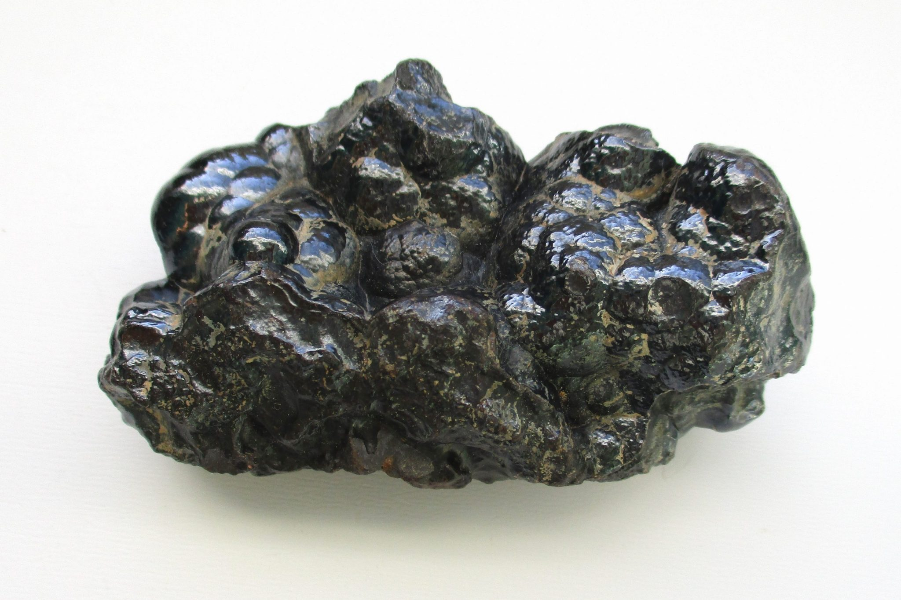

Hematite vs. Black Tourmaline: The Battle of the Black Gemstonese
Click here to see our crystal hunting maps
For centuries, humanity has been captivated by the beauty and mystery of gemstones. Black gemstones, in particular, hold a certain allure - a sense of sophistication, power, and even protection. Two of the most popular black stones, hematite and black tourmaline, are often confused due to their similar appearance. But beneath the surface of their dark beauty lie distinct properties, origins, and uses. This comprehensive guide delves into the fascinating world of hematite and black tourmaline, exploring their unique characteristics and helping you choose the perfect stone for your needs.
Hematite: The Iron Warrior
Hematite, also known as iron ore or bloodstone, is an opaque, iron oxide mineral with a metallic luster. Its color spectrum ranges from a deep, gunmetal gray to a glistening, iron-black. Hematite's most striking feature is its unique play of color, a characteristic known as iridescence. When light hits the stone at a certain angle, it can display flashes of red, purple, or brown, creating a mesmerizing effect.
Physical Properties of Hematite
- Mohs Hardness: 5.5 to 6.5 (moderately hard)
- Crystal System: Trigonal
- Luster: Metallic
- Cleavage: Poor
- Fracture: Conchoidal (smooth, curved breaks)
- Specific Gravity: 5.2 - 5.3
Hematite is a relatively common mineral found worldwide. Major deposits can be found in Brazil, Canada, China, Russia, and the United States. The formation of hematite occurs through various geological processes, including the weathering of iron-rich rocks, hydrothermal activity, and the deposition of iron oxides in sedimentary environments.
Origins and Historical Significance
Hematite boasts a rich history dating back millennia. Ancient civilizations across the globe recognized its value and incorporated it into their cultures. In Egypt, hematite was prized for its reddish hue, believed to represent blood and the life force. Egyptians used hematite for amulets, jewelry, and even cosmetics.
Similarly, the Greeks and Romans associated hematite with Mars, the god of war, due to its connection to iron. They believed the stone held the power to grant courage and strength in battle. Hematite's use extended beyond adornment. Its natural red streak made it a valuable pigment, used in cave paintings and early writing materials.
Fast forward to the Middle Ages, and hematite continued to hold symbolic meaning. Alchemists believed it held the key to transforming base metals into gold, further solidifying its association with power and transformation.
Uses of Hematite
- Jewelry: Hematite's affordability and striking appearance make it a popular choice for jewelry designers. It can be polished to a high shine or left in its natural, matte state. Hematite beads are often used in bracelets, necklaces, and earrings, offering a touch of sophistication to any outfit.
- Healing Crystals: In metaphysical practices, hematite is believed to possess grounding and protective qualities. It's associated with mental clarity, focus, and emotional stability. Hematite is often used during meditation or carried as a worry stone to promote these benefits.
- Industrial Applications: Hematite remains a vital industrial mineral. Due to its high iron content, it is the primary source of iron ore, used in the production of steel, a fundamental material in construction and manufacturing.
- Pigment: Hematite' reddish streak makes it a valuable natural pigment, known as red ochre. It continues to be used in paints and artistic creations.
Black Tourmaline: The Guardian Stone

Black tourmaline, also known as schorl, is a complex silicate mineral belonging to the tourmaline group. Its color spectrum ranges from a deep, inky black to a more translucent, brownish black. Unlike hematite, black tourmaline lacks the metallic luster and iridescence. However, it can exhibit a vitreous (glassy) or greasy luster.
Physical Properties of Black Tourmaline
- Mohs Hardness: 7 to 7.5 (hard)
- Crystal System: Trigonal
- Luster: Vitreous to greasy
- Cleavage: Poor
- Fracture: Conchoidal
- Specific Gravity: 3.0 - 3.2
Black tourmaline is a widely distributed mineral, found in igneous and metamorphic rocks worldwide. Major deposits occur in Africa, Brazil, Sri Lanka, and the United States. Black tourmaline forms during the crystallization of magma and metamorphic processes that involve high temperatures and pressures.
Origins and Historical Significance
Black tourmaline, like hematite, boasts a rich history. African cultures have revered it for centuries, believing it to possess potent protective and grounding properties. Black tourmaline was used in traditional ceremonies and worn as amulets to ward off evil spirits and negative energies.
In Europe, black tourmaline gained popularity during the 17th and 18th centuries. Alchemists and mystics believed it held the power to deflect negativity and promote spiritual growth. Black tourmaline's ability to attract and neutralize static electricity also led to its use in early scientific experiments.
Today, black tourmaline remains a significant gemstone, valued for its beauty and believed metaphysical properties.
Uses of Black Tourmaline
- Jewelry: Black tourmaline's deep color and hardness make it a popular choice for jewelry designers. It can be faceted to create brilliant gems or left in its natural, rough form for a more rustic look. Black tourmaline is often used in rings, earrings, and pendants, adding a touch of elegance and mystery.
- Healing Crystals: Black tourmaline is one of the most revered stones in metaphysical practices. It is believed to be a powerful protector against negativity, psychic attacks, and electromagnetic pollution. Many wear black tourmaline jewelry or carry tumbled stones to shield themselves from negative energies and promote emotional well-being.
- Industrial Applications: While not as widely used as hematite industrially, black tourmaline has some niche applications. Piezoelectric properties (ability to generate an electric current under pressure) make it useful in certain electronic components. Additionally, its heat resistance makes it suitable for use in crucibles for high-temperature melting processes.
Hematite vs. Black Tourmaline: A Side-by-Side Comparison
| Feature | Hematite | Black Tourmaline |
|---|---|---|
| Color | Deep gunmetal gray to glistening iron-black, with iridescence | Deep inky black to brownish black, no iridescence |
| Luster | Metallic | Vitreous to greasy |
| Mohs Hardness | 5.5 to 6.5 (moderately hard) | 7 to 7.5 (hard) |
| Crystal System | Trigonal | Trigonal |
| Cleavage | Poor | Poor |
| Fracture | Conchoidal | Conchoidal |
| Specific Gravity | 5.2 - 5.3 | 3.0 - 3.2 |
| Origins | Worldwide, including Brazil, Canada, China, Russia, and the United States | Worldwide, including Africa, Brazil, Sri Lanka, and the United States |
| Uses (Jewelry) | Popular for beads, bracelets, necklaces, and earrings | Popular for rings, earrings, and pendants |
| Uses (Healing Crystals) | Grounding, protection, mental clarity, focus, emotional stability | Protection, grounding, dispelling negativity, promoting emotional well-being |
| Uses (Industrial) | Primary source of iron ore for steel production | Piezoelectric applications, crucibles for high-temperature melting |
| Uses (Pigment) | Red ochre pigment for paints and artistic creations | Not applicable |
RELATED TOPIC: Exploring the Differences: Malachite vs Emerald Showdown
Choosing Between Hematite and Black Tourmaline: Finding the Perfect Stone
The choice between hematite and black tourmaline ultimately depends on your individual needs and preferences. Here's a breakdown to help you decide:
- For Durability: Black tourmaline, with its higher Mohs hardness, is a more durable option for everyday wear. Hematite, while moderately hard, can scratch more easily.
- For Visual Appeal: If you prefer a stone with a metallic sheen and flashes of color, hematite is a clear choice. Black tourmaline offers a classic, deep black aesthetic.
- For Metaphysical Properties: Both stones offer grounding and protective properties. If mental clarity and focus are your priorities, hematite might be a better fit. If you seek a powerful shield against negativity and electromagnetic pollution, black tourmaline is the way to go.
- For Budget: Hematite is generally more affordable than black tourmaline.
Conclusion: A World of Black Beauty
Hematite and black tourmaline, despite their similar appearance, offer distinct properties and applications. Hematite, the iron warrior, captivates with its metallic sheen and historical significance. Black tourmaline, the guardian stone, offers protection and promotes emotional well-being. Whether you seek a stunning piece of jewelry, a powerful metaphysical tool, or a glimpse into the past, both hematite and black tourmaline offer a unique connection to the natural world. So, delve deeper into the world of black gemstones and discover the perfect stone to enhance your life's journey.